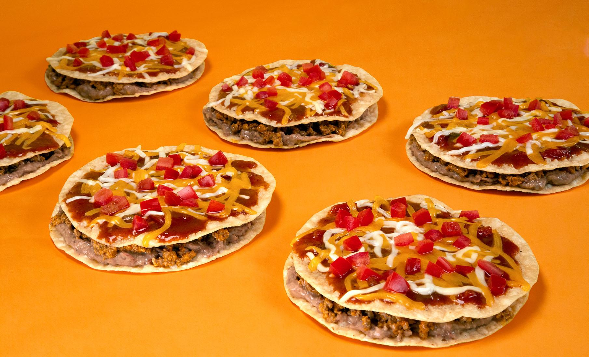

Taco Bell!
I once did an entire presentation about taco bell for a public speaking course I took at the old University of Wisconsin-Oshkosh Fond du Lac Campus.
A lot of students made jokes afterwords, but that didn't change my feelings about the Big Bell!
Some of my favorite items in ranked order include:
- The Mexican Pizza
- The Cheesy Gordita Crunch
- The Nachos Bell Grande
- Can't forget the Nacho Fries! 
The Yakuza Game Series!
I once found Yakuza 0 for sale on steam for $5, and the rest is history. I've played them all thoroughly.